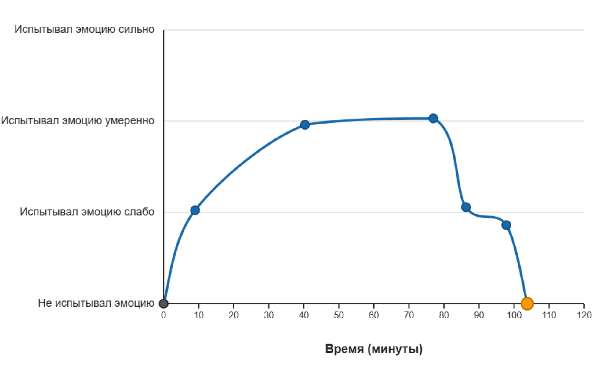

Вспомните, когда вы последний раз испытывали СТРАХ
Для исследования НЕ подходят эмоции, которые:
- Длились больше 2 часов;
- Были вызваны неизвестной причиной или возникли без неё (например, если вдруг стало тревожно без причины);
- Продолжаются сейчас.
Постарайтесь снова вжиться в ту эмоцию — вспомните:
- Что вызвало эмоцию и почему;
- Что вы почувствовали в первые минуты;
- Как менялись ваши переживания и когда закончились.
Далее вам необходимо нарисовать, как менялась сила ваших переживаний на графике, где по вертикали отмечена сила эмоций, а по горизонтали — время. Нарисуйте линию, которая показывает, насколько сильной была эмоция в разные моменты времени. Начинайте линию с точки 0 как по оси времени, так и по оси силы эмоций. Если эмоция усиливалась, линия должна подниматься; если ослабевала — опускаться. Если сила эмоции не менялась, линия должна оставаться на одном уровне.
Первый пример
Разберём на примере. Валентин встретил на улице бродячую собаку. Он боится собак и сильно испугался. Собака вскоре убежала и страх Валентина ослаб, хотя ещё 20 минут он был немного напряжён и чувствовал учащённое сердцебиение. Он изобразил такой график:

Второй пример
Другой пример. Валентин встревожился, когда, будучи на работе, вспомнил, что по рассеянности мог не закрыть дверь домой. В течение полутора часов его тревога нарастала, пока он прокручивал в голове мысль о незапертой двери. Потом Валентин совершил душевное усилие и рационально убедил себя, что не мог не закрыть дверь, ведь всегда закрывает её. Это успокоило его. Он изобразил такой график:

Теперь нарисуйте свой график
Тут вы можете нарисовать свой график для ситуации, когда вы в последний раз испытывали СТРАХ.
Оцените значимость события, вызвавшего эмоцию
Если рисунок получился неудачным, вы можете его «Очистить». Не забудьте нажать «Сохранить», когда нарисуете финальный вариант и дождаться сохранения.